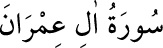

<a name=896></a><br/>
<b>3- ÂL-İ İMRÂN SÛRESİ</b><br/>
<i><b>Medîne’de nâzil olmuştur, 20 âyettir. 34-37. âyetlerde Hz. Meryem’in babasının</b></i><br/>
<i><b>mensup olduğu İmrân ailesinden söz edildiği için sûe bu adı almıştır.</b></i><br/>
